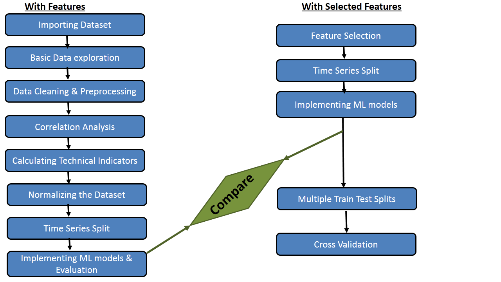
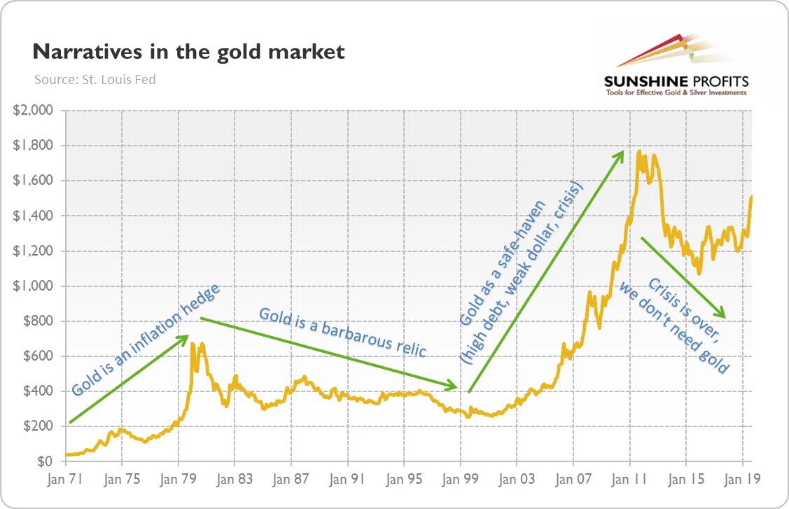

Abstract
The Gold Price Prediction project utilizes advanced machine learning algorithms to predict future gold prices based on historical data. With the global economic landscape continuously changing, gold prices are influenced by a wide range of factors including inflation rates, political instability, economic events, and market sentiment. The primary objective of this project is to develop a predictive model capable of forecasting gold prices with high accuracy, enabling traders, investors, and analysts to make informed decisions in an increasingly volatile market.
This project uses a variety of data sources, including historical gold price data, economic indicators, and global market trends. By preprocessing the data and applying machine learning techniques such as regression analysis, decision trees, and time-series forecasting, the model aims to predict the future value of gold prices based on past trends and patterns.
The results of this project demonstrate the potential of machine learning in financial forecasting, providing valuable insights into the relationships between different economic factors and gold price movements. Furthermore, the project serves as an educational resource for anyone interested in learning how to apply data science and machine learning techniques to real-world financial problems.
Problem Description
Predicting the price of gold has long been a challenging task due to the multitude of factors that influence its price. Gold is often viewed as a safe-haven asset, with its value fluctuating in response to global economic shifts, geopolitical events, inflation rates, and changes in the value of fiat currencies. These fluctuations make it crucial for investors, traders, and financial institutions to develop accurate predictive models that can help forecast the future price of gold and guide investment decisions.
The problem this project seeks to solve is the development of a robust machine learning model capable of predicting the price of gold based on historical price data and external factors. The task is inherently complex because the gold market does not follow simple patterns; it is influenced by a variety of unpredictable and interrelated variables, including government policies, interest rates, natural disasters, and even market sentiment.
A major challenge is the large amount of historical data that needs to be processed, cleaned, and analyzed to uncover meaningful patterns. Traditional forecasting methods, such as linear regression, often fail to account for the non-linear relationships between gold prices and economic factors. Therefore, more sophisticated approaches, including time-series analysis and machine learning techniques, are required to better model and predict future price trends.
This project uses machine learning algorithms such as decision trees, support vector machines, and neural networks to analyze historical price data and identify patterns that can be used to forecast gold prices. By incorporating both time-series data (e.g., historical prices) and external factors (e.g., inflation rates, stock market indices), the model aims to provide a more accurate and comprehensive forecast than traditional methods.
The ultimate goal of this project is to empower stakeholders—ranging from individual investors to large financial institutions—with a powerful tool that can provide reliable gold price forecasts. Accurate predictions would allow for better risk management, enhanced portfolio strategies, and smarter investment decisions in an increasingly volatile global market.
References
- https://www.geeksforgeeks.org/gold-price-prediction-using-machine-learning/
- https://www.fxstreet.com/markets/commodities/metals/gold
- https://www.bajajfinserv.in/gold-price-forecast-for-next-week
- Data sources such as Kaggle for historical gold prices.
- Authoritative literature and research articles on financial data analysis and prediction.
Acknowledgements
This work is done as a course project for the course Data Engineering, IIT Jodhpur under Prof. Romi Banerjee.
Contact Us
For any queries, feel free to reach out to Arjun Bhattad, or raise an issue on our GitHub project page.